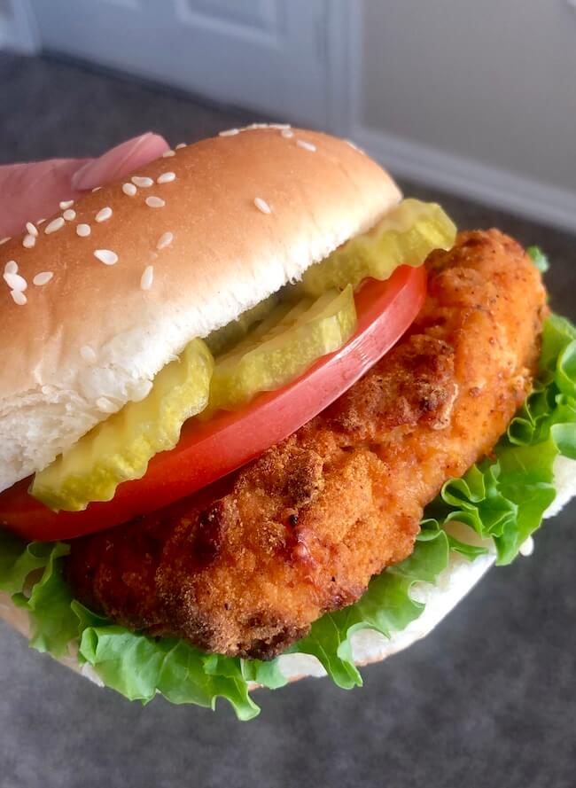

Spicy Chicken Sandwhich Recipe

An air fried Spicy Chicken Sandwich made with chicken breast, mayo, tomatoes and pickles. Serve it on a bun, eat it without, or on a lettuce wrap, all are awesome choices.
Ingredients for the Chicken
- 0.38 lbs (170.25 g) boneless skinless chicken breast
- 0.16 cups (15.63 g) ground corn chex
- 0.13 tsp (0.5 g) onion powder
- 0.13 tsp (0.5 g) garlic powder
- 0.13 tsp (0.5 g) paprika
- 0.19 tsp (0.75 g) cayenne pepper
- 0.25 eggs
- 0.38 tbsp (5.63 g) hot sauce
- (1 g) oil spray
Ingredients for the toppings
- 1 (51 g) hamburger buns
- 0.25 tbsp (3.5 g) butter
- 1 tbsp (13 g) mayo
- 0.25 large (56.75 g) tomatoes
- 0.06 cup (28.38 g) hamburger pickle chips
- 0.13 head (37.5 g) romaine lettuce
Steps for the chicken
- When I made this recipe, I had 4 chicken breasts to total 3lbs. That made for an easy division into 8 pieces. If you have bigger or smaller breasts you may need to get creative with your cutting. You want 1 pieces of equal weight.
- Cut your chicken breasts into 1 equally weighted pieces.
- Lay some plastic wrap over the chicken and pound each piece until they are around ½" in thickness and shaped like a piece of chicken that would go on a sandwich. Season each side with salt and pepper.
- Crack two eggs into bowl with 0.38 tbsp of hot sauce and beat to combine.
- For the breading I use ground corn chex. To make this I put corn chex cereal into the blender until it is a powder. You can use whatever you like, within reason, as a breading. I just prefer the corn chex.
- Mix the ground corn chex with onion powder, garlic powder, paprika, and cayenne pepper. If you like your food spicy, add more cayenne to taste.
- To bread each piece of chicken, dunk the chicken pieces into the egg wash and then into the breading mixture.
- Preheat your air fryer to 400°F and cook the chicken for 4-5 minutes on each side. Spray with top side with oil when you put the chicken in and after you flip each piece.
Steps for the bread and toppings
- Toast your buns by spreading a light layer of butter over the top and placing down in a hot skillet for a couple of minutes.
- Wash and cut your tomatoes into thin slices.
- Wash and dry your romaine lettuce leaves.
Constructing the sandwhich
- Each sandwich gets 1 piece of chicken, 1-2 tomato slices, a piece of lettuce, pickles, and mayo spread on the bun.